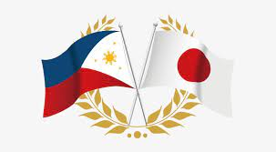
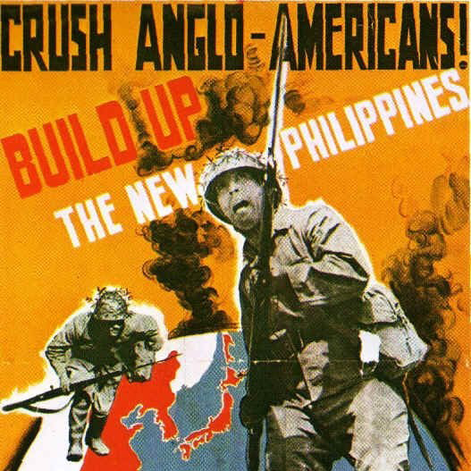

BRIEF HISTORY
The Japanese occupation of the Philippines occurred between 1942 and 1945, when
Imperial Japan occupied the Commonwealth of the Philippines during World War II. The invasion of the Philippines
started on 8 December 1941, ten hours after the attack on Pearl Harbor. As at Pearl Harbor, American aircraft were severely
damaged in the initial Japanese attack. Lacking air cover, the American Asiatic Fleet in the Philippines
withdrew to Java on 12 December 1941. General Douglas MacArthur was ordered out, leaving his men at Corregidor on the
night of 11 March 1942 for Australia, 4,000 km away. The 76,000 starving and sick American and Filipino defenders in
Bataan surrendered on 9 April 1942, and were forced to endure the infamous Bataan Death March on which 7,000–10,000
died or were murdered. The 13,000 survivors on Corregidor surrendered on 6 May. Japan occupied the Philippines for over
three years, until the surrender of Japan. A highly effective guerilla campaign by Philippine resistance forces-controlled
sixty percent of the islands, mostly jungle and mountain areas. MacArthur supplied them by submarine, and sent reinforcements
and officers.
SOCIETY
The Japanese promised a “Bagong Araw,” or “New Era,” and called for an age of “Asia for Asians.”
Some Filipinos cooperated with the occupiers, either in hopes that the Japanese would be more supportive
of an independent Philippines, and others to get rich by working with the Japanese. In October 1943, Japan
even granted independence to the Philippines. Emilio Aguinaldo was on hand to raise the flag of the Second
Philippine Republic. Longtime judge José Laurel was appointed as president. “The offer of independence could
not have been rejected,” he later wrote. “Our ancestors had fought for it.” But despite messages of cooperation
and prosperity, the Japanese were foreign occupiers and the country was at war. Japanese forces fanned out to
occupy cities and villages across the islands. Military police and a network of informants kept a close eye on
ordinary citizens, and carefully censored their publications while filling the airwaves with propaganda broadcasts.
The Japanese executed Filipinos who were caught aiding guerillas (local masked informers were tasked with pointing
out collaborators); the Japanese also committed retaliatory executions of civilians for guerilla activity.

Source: Japanese occupation of the Philippines - Google Arts & Culture. (n.d.). Google Arts & Culture.

Source: Japanese propaganda poster, 1942.
To counter Japanese propaganda and censorship, the Filipino resistance, with the help of Americans,
built their own information-sharing networks. Illegal broadcasts and underground newspapers reported the
actual progress of the war, including American advances in the Pacific, and boosted morale.
These messages reported and reassured Filipinos that guerillas were fighting the Japanese and that the
Americans would return.
If caught with underground newspapers like “The Liberator” or illegal shortwave radios,
the consequences would be deadly. Filipinos risked their lives to produce and share news and to stay in touch
with American forces during the war. Filipinos made their own ink; paper was scarce, so surviving newspapers are
often printed on the reverse of other items.
The Japanese poster in this explainer attempts to rally pan-Asian sentiment and inspire anti-American
feelings among Filipinos. Other examples of Japanese propaganda can be found in the Under One Flag exhibit.
REFERENCE
- Japanese occupation of the Philippines - Google Arts & Culture. (n.d.). Google Arts & Culture.
- Explainer 4 | Duty to Country. (2023, August 28). Duty to Country.